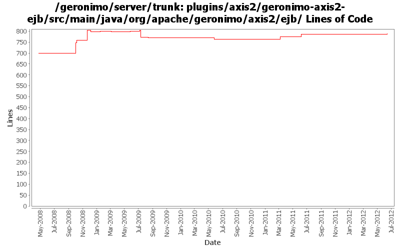

[root]/plugins/axis2/geronimo-axis2-ejb/src/main/java/org/apache/geronimo/axis2/ejb

| Author | Changes | Lines of Code | Lines per Change |
|---|---|---|---|
| Totals | 45 (100.0%) | 318 (100.0%) | 7.0 |
| gawor | 20 (44.4%) | 146 (45.9%) | 7.3 |
| xuhaihong | 12 (26.7%) | 122 (38.4%) | 10.1 |
| djencks | 4 (8.9%) | 32 (10.1%) | 8.0 |
| dblevins | 3 (6.7%) | 12 (3.8%) | 4.0 |
| jdillon | 6 (13.3%) | 6 (1.9%) | 1.0 |
GERONIMO-6364 jaxws-catalog-tests test failed for UnknownHostExceptiion
Since Geronimo installs the whole ear as one bundle now, there may be issues while reading wsdl and jax-ws-catalog.xml file. Now the solution is that,
for WAR in EAR, as the WAR will be extracted, we will add the module directory prefix for those files, so that bundle.getEntry could work.
for EJB in EAR, the url will be something like ejb.jar!/META-INF/a.wsdl, we will try to build a jar URL to get the resource, one thing that needs to improve is that, this kind of URL will cause a full copy of the target jar file, as JarURLHandler may not recognize the bundleentry protocol.
7 lines of code changed in 2 files:
GERONIMO-5990 A JAXWSApplicationContext GBean is added to hold all the available port info in the current web or ejb module
I hope that in the future, we could have a way to avoid create each factory gbean for each web service endpoint, and there will be a method like getWebServiceContainer method in this gbean
16 lines of code changed in 2 files:
Use uppercase style for Axis2ModuleRegistry
23 lines of code changed in 3 files:
Use BundleListener Axis2ModuleRegistry to configure available Axis2 Modules, while we searched in the classpath in the past
12 lines of code changed in 2 files:
Updates corresponding to OPENEJB-1354: Internal CoreDeploymentInfo class renamed to BeanContext
12 lines of code changed in 3 files:
Identify the interface type while exposing EJB as web service, or OpenEJB could not determine the current invocation type while the same interface is used for both business interface and endpointInterface
26 lines of code changed in 1 file:
a. remove the use of configurationUrl \n b. Add a BundleAwareReference interface
38 lines of code changed in 2 files:
fix compilation problem
2 lines of code changed in 1 file:
GERONIMO-4645 use jacc ejb ws auth for jetty6, simplify SOAPHandler interface
1 lines of code changed in 1 file:
GERONIMO-4645 Work on ejb ws security. Missed a file in previous commit
23 lines of code changed in 1 file:
prefer openejb-jar.xml instead of geronimo-openejb.xml descriptor in ejb ws deployer and pass additional properties object to SoapHandlers
7 lines of code changed in 1 file:
GERONIMO-4553 Make web use of security realms depend on plugin visibility; make console expose the 'global' attribute for configuration (renamed from 'publish'). Also merges in geronimo-security changes from sandbox branches.
6 lines of code changed in 1 file:
Don't rely on config substitution properties in ejb jax-ws deployers (GERONIMO-4554)
13 lines of code changed in 1 file:
Support OASIS catalogs with Axis2 (GERONIMO-4501)
2 lines of code changed in 1 file:
support for specifying a list of http methods that should be secured for ejb-based web services (GERONIMO-4015)
0 lines of code changed in 2 files:
check all interfaces for javax.xml.ws.Provider interface. Based on patch from Ivan (GERONIMO-4450)
11 lines of code changed in 1 file:
set proper EndpointLifecycleManager for ejb web services (GERONIMO-4416)
45 lines of code changed in 2 files:
get addressing somewhat working (GERONIMO-4327)
15 lines of code changed in 1 file:
initial step to upgrade to latest Axis2 for JAX-WS 2.1 support (GERONIMO-4327)
53 lines of code changed in 11 files:
More loggers back to static
6 lines of code changed in 2 files:
(GERONIMO-3985) Use SLF4J as the primary logging facade for Geronimo
0 lines of code changed in 4 files: